Birch Tree
×
Birch TreeA birch has smooth, resinous, varicoloured or white bark, marked by horizontal pores (lenticels), which usually peels horizontally in thin sheets, especially on young trees. On older trunks the thick, deeply furrowed bark breaks into irregular plates. Short, slender branches rise to a narrow pyramidal crown on a young tree; they become horizontal, often pendulous, on an older tree. The egg-shaped or triangular, usually pointed leaves have toothed margins; they are alternately arranged on the branchlets. |
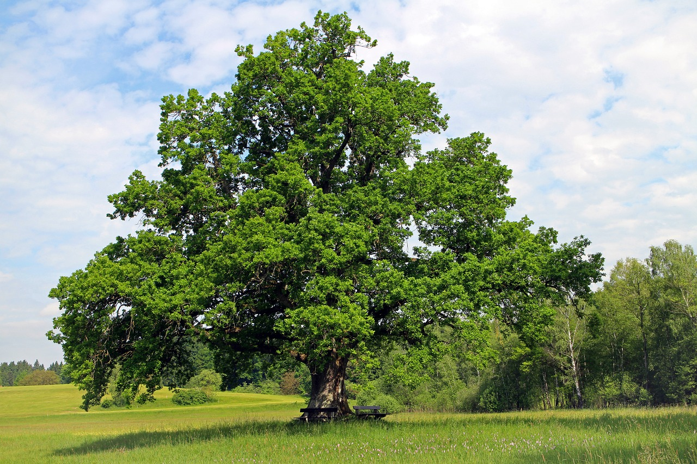
Oak Tree
×
Oak TreeOak trees are one of the most robust and large trees in the world, and they’ve been around for millions of years. |
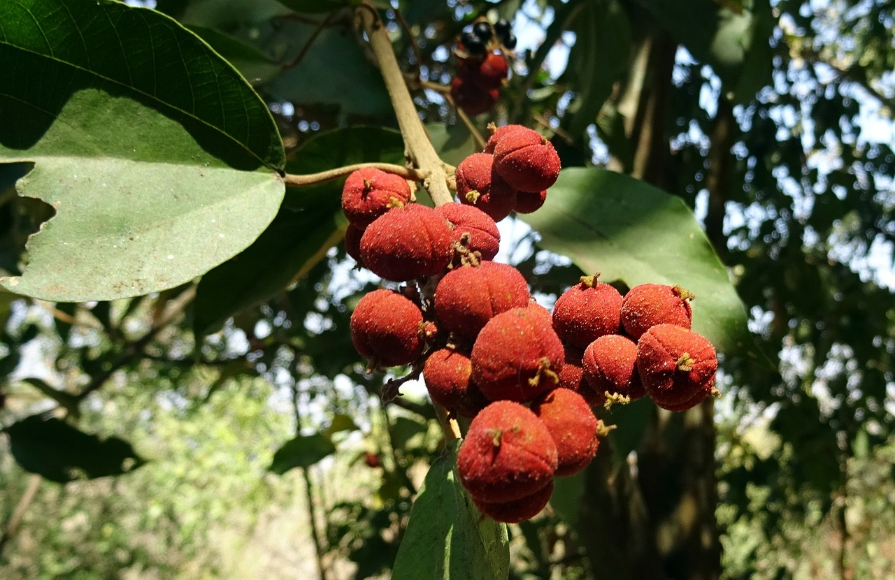
Kamala Tree
×
Kamala TreeThe kamala tree (Mallotus philippensis) is a tropical tree most notable for its bright orange-red seed pods that are valued for their dye-producing abilities. The tree is also grown for its wood. This tree is also grown ornamentally, largely because of its brightly colored fruit. Very common perennial shrub or small tree found in outer Himalayas ascending to 1500 meters. |
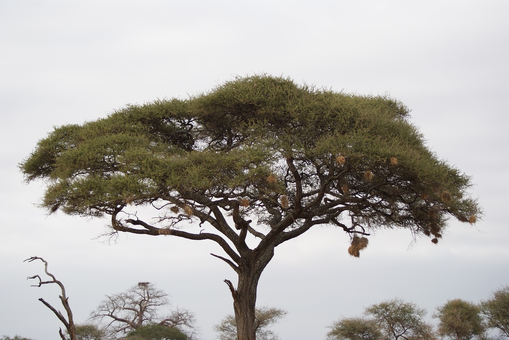
Acacia Tree
×
Acacia TreeAcacias are very grateful trees, The foliage is typically bright green or bluish green and the small blooms may be creamy white, pale yellow, or bright yellow. Acacia may be evergreen or deciduous. |
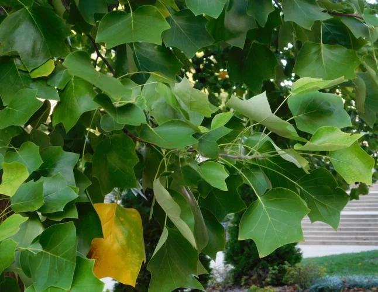
Tulip Tree
×
Tulip TreeOne of the tallest and most beautiful eastern hardwoods, with a long, straight trunk, a narrow crown that spreads with age, and large showy flowers resembling tulips or lilies. A tall, straight, deciduous tree, up to150 ft. tall (sometimes taller), tulip tree has a medium to narrow crown and distinctive, star-shaped foliage. The leaves are waxy and smooth, and dependably turn bright gold in fall. Showy, yellow-orange, tulip-like flowers are often missed because they are up 50 ft. or higher in the tops of trees. Cone-shaped seedheads remain after leaves have fallen. |
|
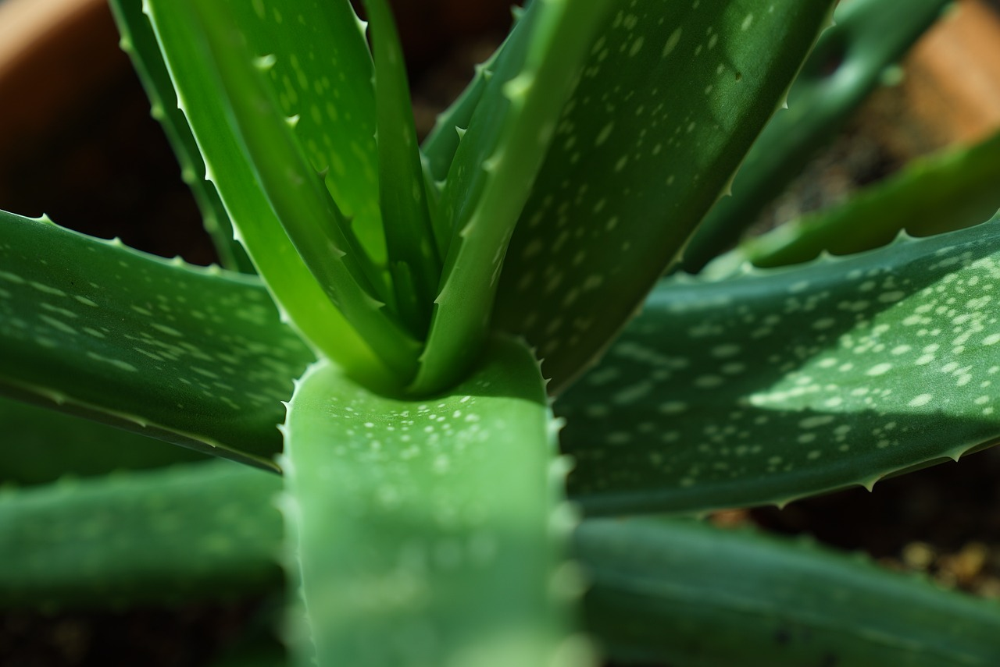
Aloe Vera Plant
×
Aloe Vera PlantAloe is a cactus-like plant that grows in hot, dry climates. It is cultivated in subtropical regions around the world, including the southern border areas of Texas, New Mexico, Arizona, and California. Historically, aloe has been used for skin conditions and was thought to improve baldness and promote wound healing. Aloe is used topically (applied to the skin) and orally. Topical use of aloe is promoted for acne, lichen planus (a very itchy rash on the skin or in the mouth), oral submucous fibrosis, burning mouth syndrome, burns, and radiation-induced skin toxicity. Oral use of aloe is promoted for weight loss, diabetes, hepatitis, and inflammatory bowel disease (a group of conditions caused by gut inflammation that includes Crohn’s disease and ulcerative colitis). |
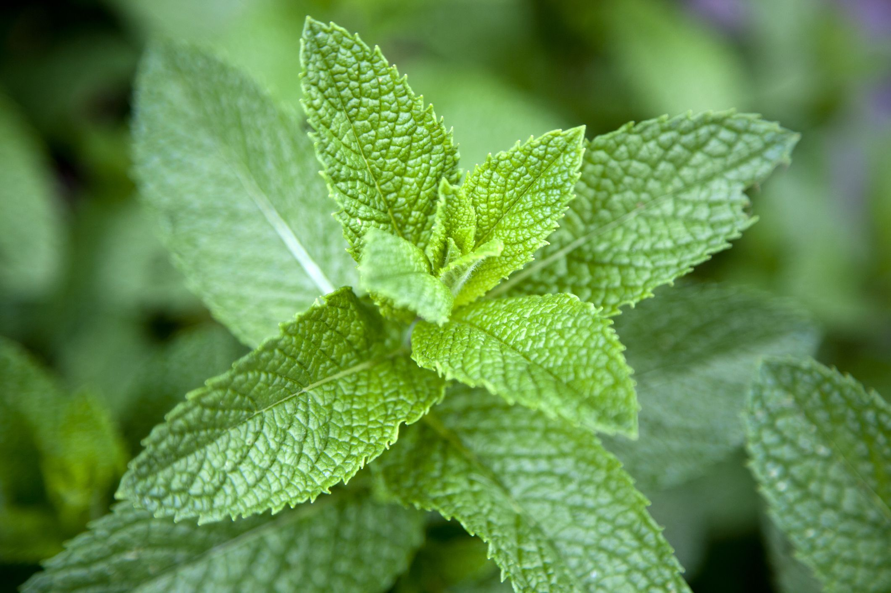
Peppermint Plant
×
Peppermint PlantPeppermint is a common flavoring agent in foods and beverages, and peppermint oil is used as a fragrance in soaps and cosmetics. Peppermint has been used for health purposes for several thousand years. Records from ancient Greece, Rome, and Egypt mention that it was used for digestive disorders and other conditions. Peppermint has a strong sweetish odour and a warm pungent taste with a cooling aftertaste. The leaves are typically used fresh as a culinary herb, and the flowers are dried and used to flavour candy, desserts, beverages, salads, and other foods. Its essential oil is also widely used as a flavouring. |
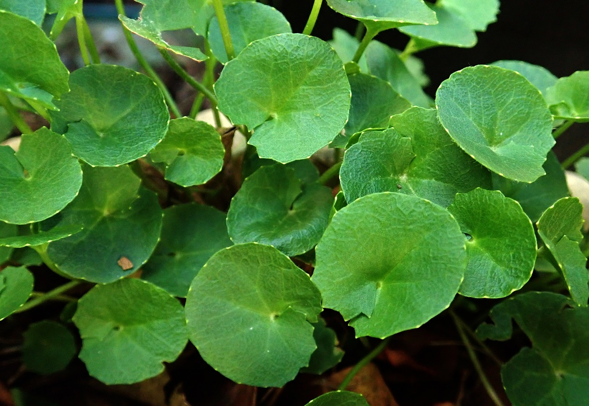
Gotu Kola Plant
×
Gotu Kola PlantGotu kola, or Centella asiatica, is a plant traditionally used in Chinese and Indonesian medicine. Known as the “herb of longevity,” this plant is indigenous to the wetlands of Southeast Asia, where it’s consumed as a juice, tea, or supplement. Practitioners of alternative medicine use gotu kola for its anti-inflammatory benefits, as well as to promote overall mental health. While some benefits of the herb may need further study, gotu kola may help improve your health and well-being. |
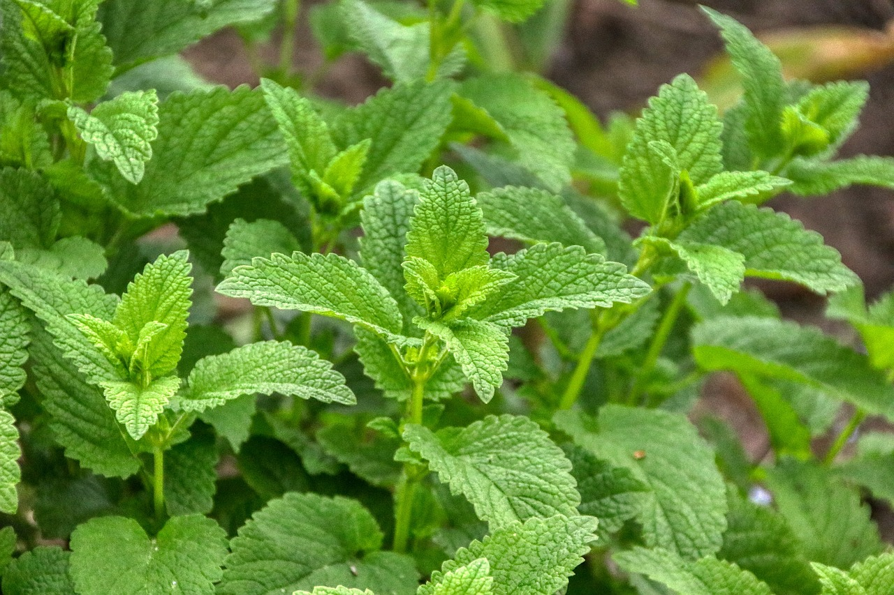
Lemon Balm Plant
×
Lemon Balm PlantLemon balm (Melissa officinalis) is an herb from the mint family. The leaves, which have a mild lemon aroma, are used to make medicine and flavor foods. Lemon balm contains chemicals that seem to have a sedative and calming effect. It might also reduce the growth of some viruses and bacteria. |
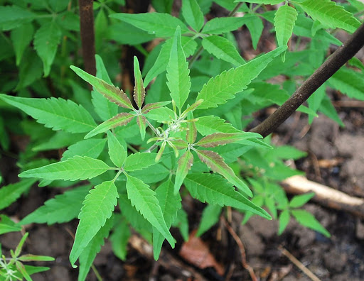
Lagundi Plant
×
Lagundi PlantLagundi (scientific name: Vitex negundo) is a large native shrub that grows in Asia and Southeast Asia such as the Philippines and India and has been traditionally used as herbal medicine and is an important medicinal plant in Ayurvedic and Unani systems of medicine. The extracts from its leaves and roots are mostly considered to provide the most health benefits. The Philippine Department of Health has conducted research and study for Lagundi and has suggested that the lagundi plant has a number of verifiable therapeutic value and health benefits to man. |
|
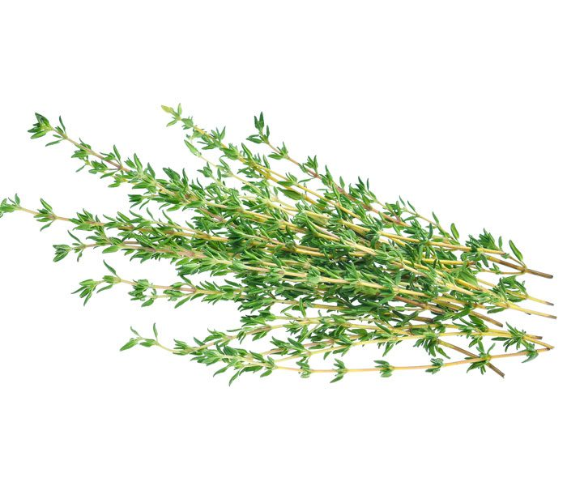
Thyme Flower
×
Thyme FlowerThyme (Thymus vulgaris) is an herb with a distinct smell. The flowers, leaves, and oil are commonly used to flavor foods and are also used as medicine. Thyme contains chemicals that might help bacterial and fungal infections. It also might help relieve coughing and have antioxidant effects. Common thyme is a dwarf, woody, evergreen perennial in the Lamiaceae (mint) family. Common thyme originated in southern Europe and northern Africa. It prefers the dry, rocky soils of the Mediterranean. Thyme has been used for centuries as a culinary herb or herbal medicine. |
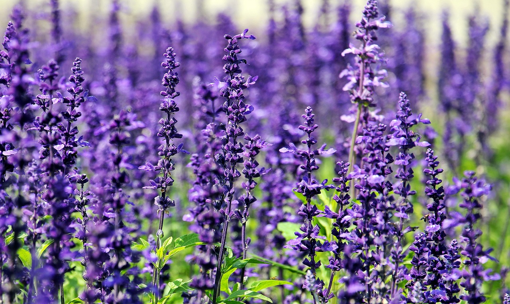
Lavender Flower
×
Lavender FlowerLavender is native to the mountainous zones of the Mediterranean where it grows in sunny, stony habitats. Lavender is a heavily branched short shrub that grows to a height of roughly 60 centimeters (about 24 inches). Its broad rootstock bears woody branches with upright, rod like, leafy, green shoots. A silvery down covers the gray green narrow leaves, which are oblong and tapered, attached directly at the base, and curled spirally. The oil in lavender's small, blue violet flowers gives the herb its fragrant scent. The flowers are arranged in spirals of 6 to 10 blossoms, forming interrupted spikes above the foliage |
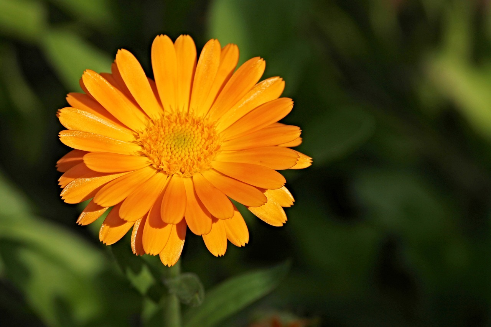
Calendula Flower
×
Calendula FlowerThe flower petals of the calendula plant (Calendula officinalis), or pot marigold, have been used for medicinal purposes since at least the 12th century. Calendula is native to Mediterranean countries but is now grown as an ornamental plant throughout the world. However, it is not the same as the annual marigold plant that is often grown in gardens. Calendula is an annual plant that thrives in almost any soil but can typically be found in Europe, Western Asia, and the United States. It belongs to the same family as daisies, chrysanthemums, and ragweed. Its branching stems grow to a height of 30 to 60 cm, and it blooms from early spring until frost. The orange-yellow petals of the flowers are used for medicine. |
Rose Flower
×
Rose FlowerRoses are one of the most loved flowers in the world. These stunning and fragrant symbols of love have been in cultivation for thousands of years. They come in all sorts of fantastical forms and exquisite colours that are enjoyed in ornamental displays throughout the world. Their stems are usually prickly and their glossy, green leaves have toothed edges. Rose flowers vary in size and shape. They burst with colours ranging from pastel pink, peach, and cream, to vibrant yellow, orange, and red. Many roses are fragrant, and some produce berry-like fruits called hips. |
Chamomile Flower
×
Chamomile FlowerThe tiny daisy-like flowers of German chamomile have white collars circling raised, cone-shaped, yellow centers and are less than an inch wide, growing on long, thin, light green stems. Sometimes chamomile grows wild and close to the ground, but you can also find it bordering herb gardens. It can reach up to 3 feet high. German chamomile is native to Europe, north Africa, and some parts of Asia. It is closely related to Roman chamomile (Chamaemelum nobile), which, although less commonly used, has many of the same medicina |
|
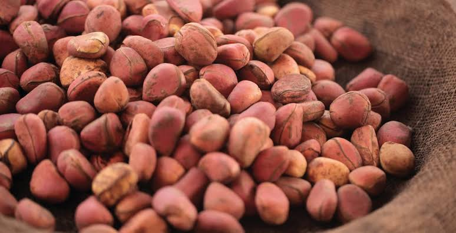
Kola Nuts
×
Kola NutsKola nitida is a tall tree, native to tropical Africa, with yellow flowers that ripen into walnut-sized, reddish-brown seeds. The seeds are referred to as kola nuts, which are bitter tasting, contain caffeine, and symbolize peace and friendship for many cultures. Cola nut is used for short-term relief of fatigue, depression, chronic fatigue syndrome (CFS), melancholy, lack of normal muscle tone (atony), exhaustion, dysentery, a type of diarrhea called atonic diarrhea, weight loss, and migraine headaches. In foods and beverages, cola nut is used as a flavoring ingredient. |
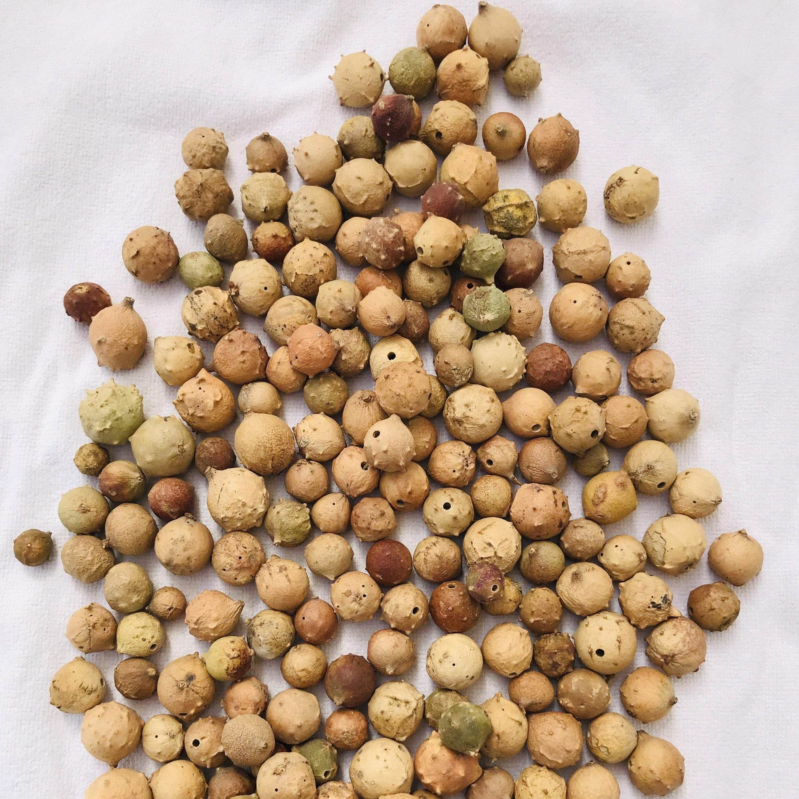
Gall Nuts
×
Gall Nutsquercusfolii gall nuts are an alternative tannin source with potential use in herbal medicine and the pharmaceutical industry. ethnopharmacology; pharmacopoeias; antimicrobial; herbal drugs; polyphenols. Gallnuts are used in traditional medicine for the treatment of inflammatory diseases, dental caries, and wound healing. As they have strong astringent effects, they are also used for the treatment of hemorrhage, and intestinal disorders such as diarrhea, dysentery, and cholera. |
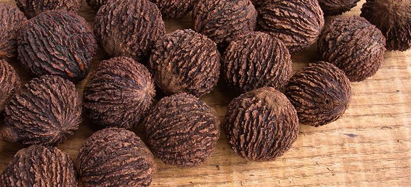
Black Walnuts
×
Black WalnutsBlack walnuts are high in omega-3 fatty acids and many vitamins and minerals. They may reduce heart disease risk and possess anticancer and antibacterial properties. Antioxidants and other plant compounds in black walnut hulls make them a popular herbal supplement — though research is still limited. Studies show that your body converts walnut oil's fatty acids into compounds that make up your skin. Scientists believe that getting enough omega-3s and omega-6s in your diet — like those in walnut oil — may promote better skin health, heal wounds faster, and treat eczema, acne, and even some skin cancers. |
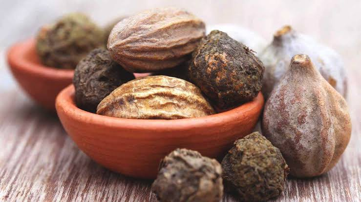
Triphala Amalaki
×
Triphala AmalakiTriphala is not a single fruit, plant, or herb, but rather an herbal formulation—one of the most popular and commonly used formulas in Ayurveda! Literally meaning “three fruits,” triphala (also known as "triphala churna") is a traditional Ayurvedic blend consisting of three simple ingredients, each one a beneficial fruit native to the Indian subcontinent: amalaki (Emblica officinalis), bibhitaki (Terminalia bellirica), and haritaki (Terminalia chebula).Triphala is one of the most well-known and commonly used formulas in Ayurveda. With a unique ability to detoxify and rejuvenate the body, along with a host of other benefits, this traditional herbal formula is one of the true staples of an Ayurvedic lifestyle. |
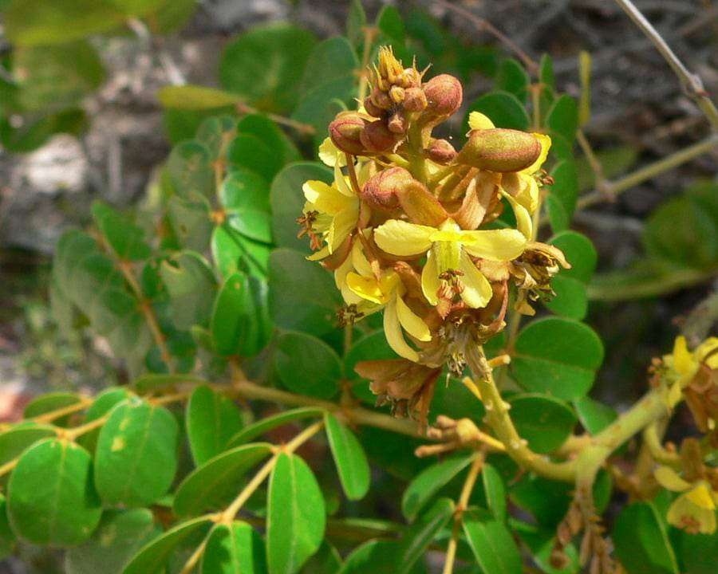
Guilandina bonduc
×
Guilandina bonducGuilandina bonduc Linn. (Fabaceae), a prickly shrub that grows abundantly in tropical and subtropical regions of Southeast Asia, possesses an extensive medicinal value. A decoction of the leaves is prescribed as an antidepressant for mentally disturbed persons. In large doses the plant is believed to be poisonous. A decoction of the leaves is used to treat sinusitis, and of the roots for fatigue. Its leaves and bark are considered emmenagogue, febrifuge and anthelmintic. |